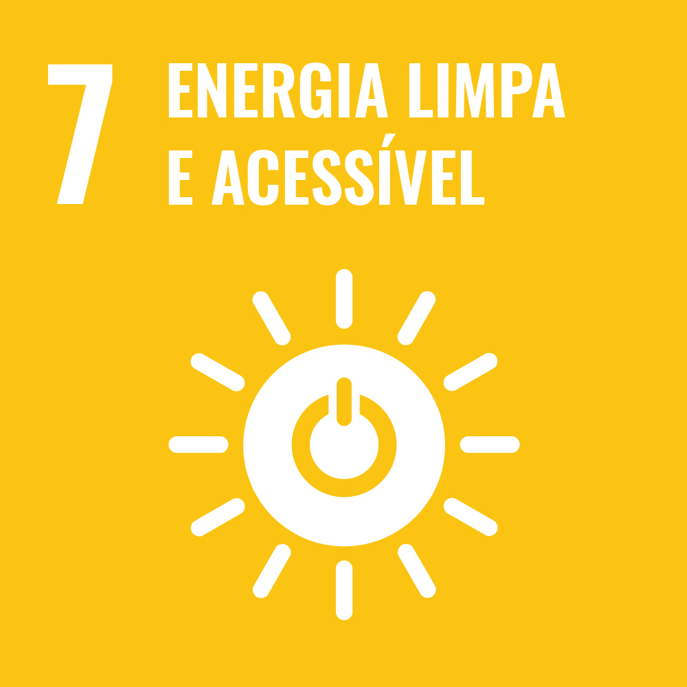
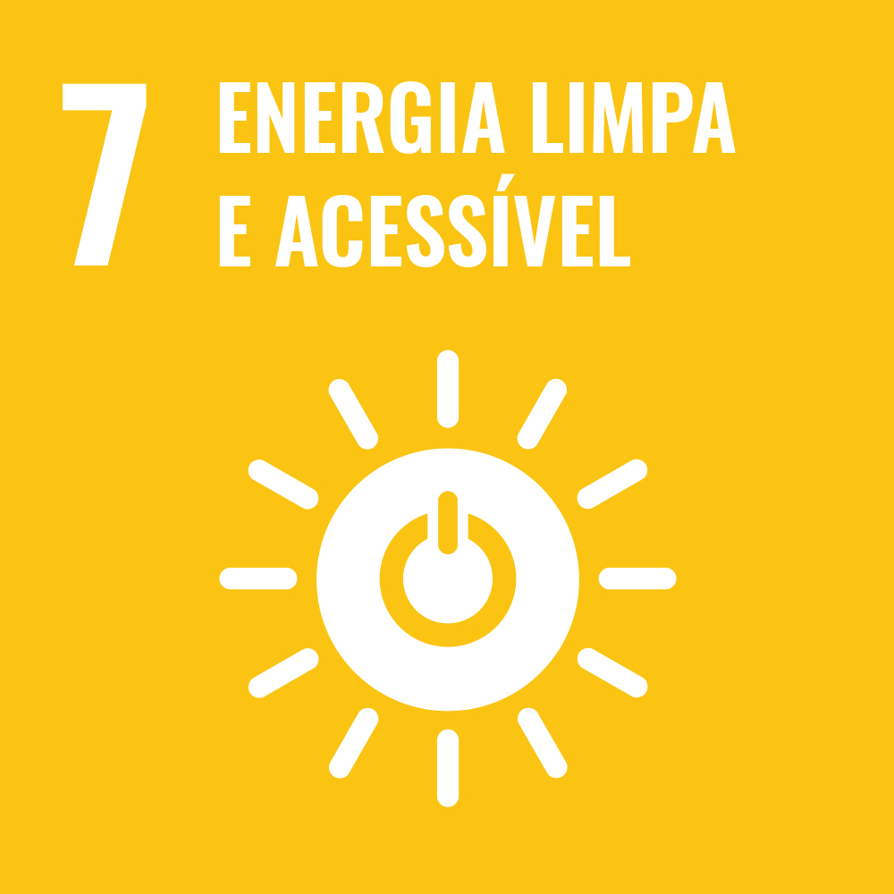
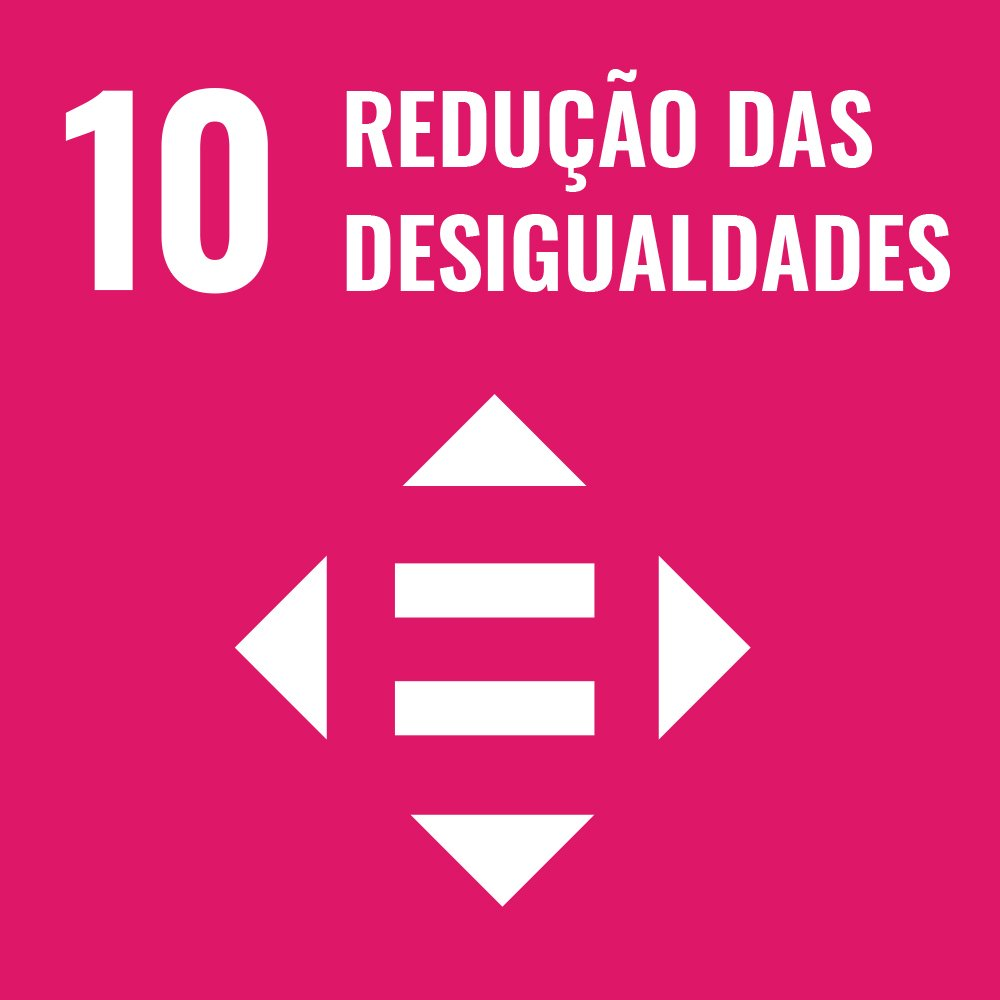
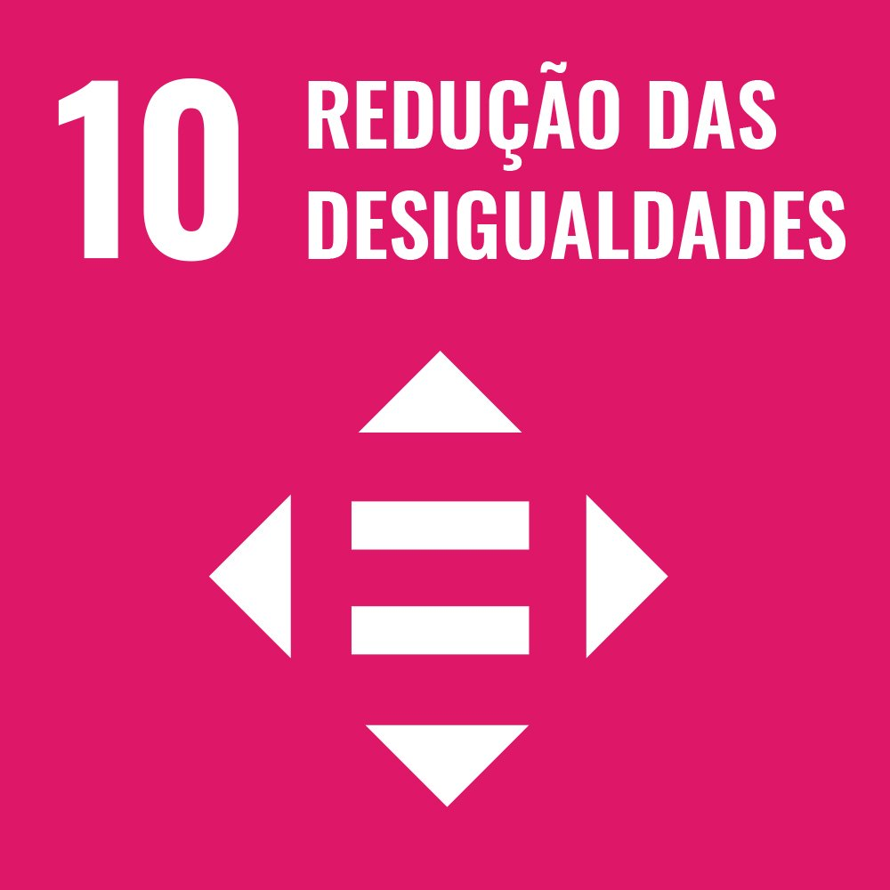
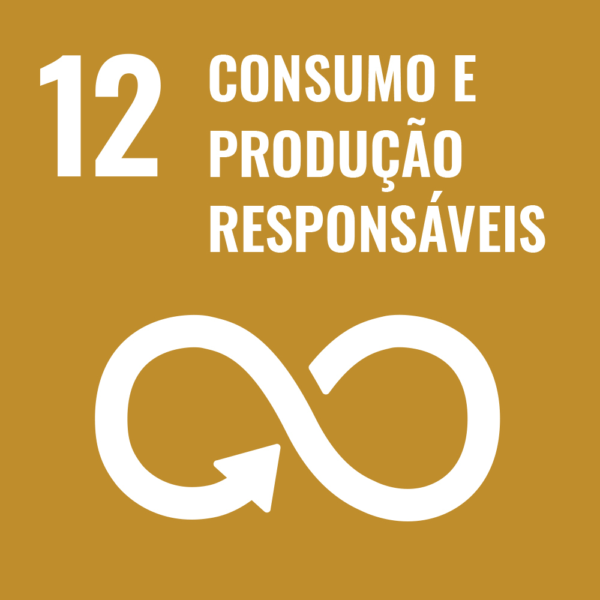
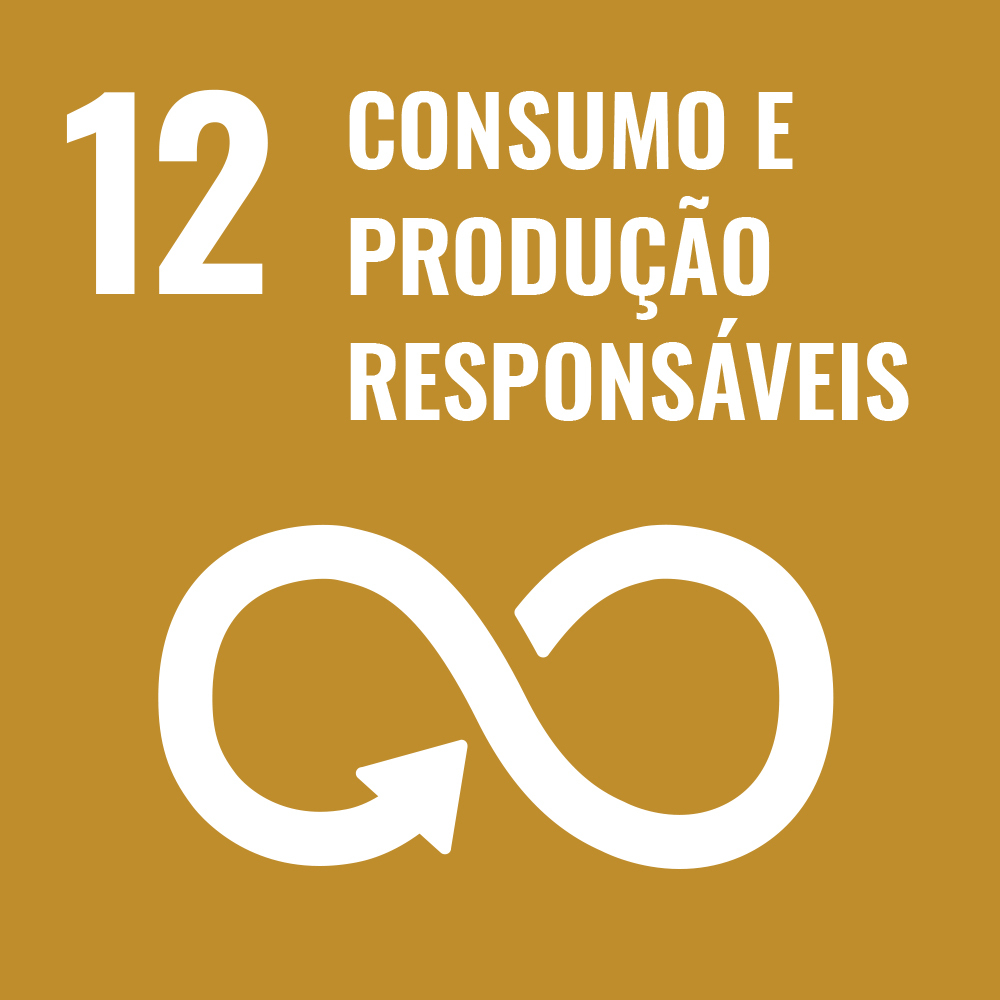
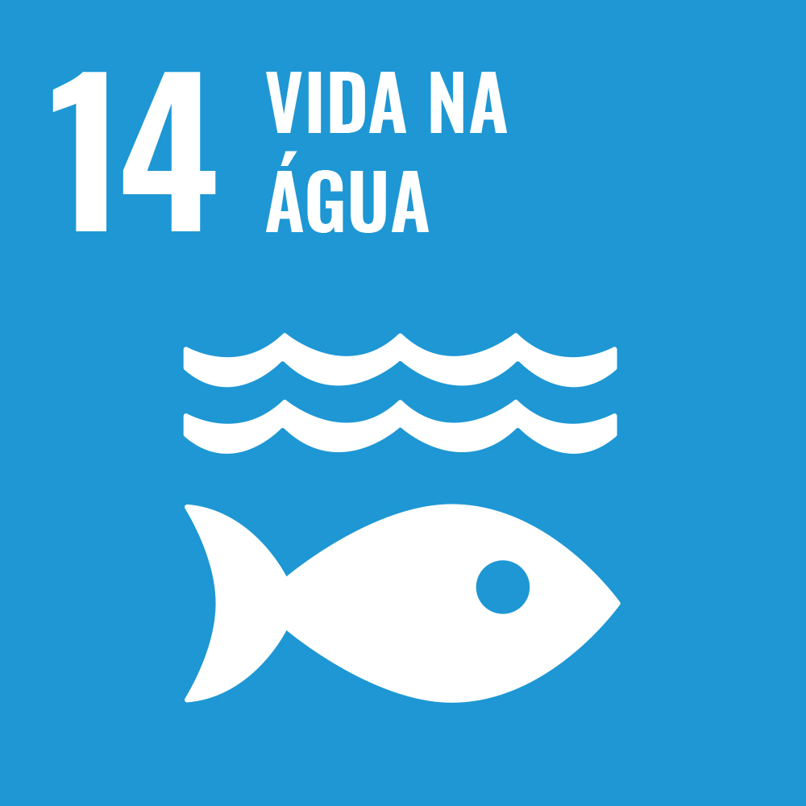
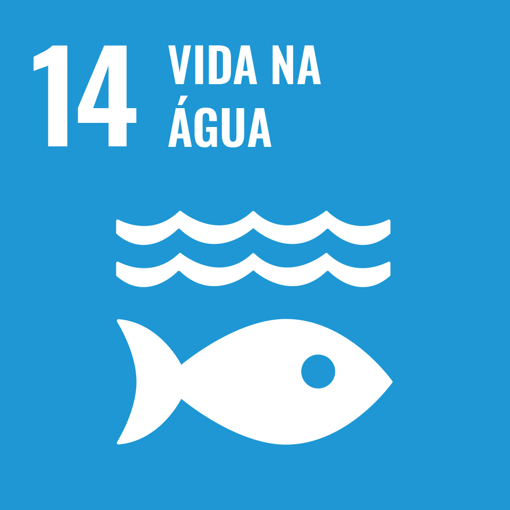

OS ODS
Objetivos de Desenvolvimento Sustentável
O que são as ODS?
As ODS referem-se aos Objetivos de Desenvolvimento Sustentável. As ODS são uma série de 17 objetivos estabelecidos pelas Nações Unidas em 2015 como parte da Agenda 2030 para o Desenvolvimento Sustentável. Esses objetivos foram criados para abordar os desafios sociais, econômicos e ambientais enfrentados em todo o mundo, e têm como objetivo promover a prosperidade e o bem-estar das pessoas, proteger o planeta e garantir a paz e a parceria global.
Um dos 17 Objetivos de Desenvolvimento Sustentável possui metas específicas a serem alcançadas até o ano de 2030. Alguns dos principais objetivos incluem a erradicação da pobreza, a promoção da igualdade de gênero, a garantia da educação de qualidade, o combate às mudanças climáticas, a conservação dos recursos naturais, a promoção da saúde e do bem-estar, entre outros.
As ODS são uma chamada à ação para governos, setor privado, sociedade civil e indivíduos trabalharem juntos em direção a um futuro mais sustentável e equitativo. A implementação dos Objetivos de Desenvolvimento Sustentável requer esforços coordenados em níveis global, nacional e local, e envolve uma ampla gama de atores e iniciativas em todo o mundo. Abaixo do texto você poderá ver um vídeo sobre o que são as ODS de forma clara, e logo em seguida todas os 17 Objetivos de Desenvolvimento Sustentável:


 


 

 

 



https://www.ipea.gov.br/ods/
https://censo2022.ibge.gov.br/panorama/